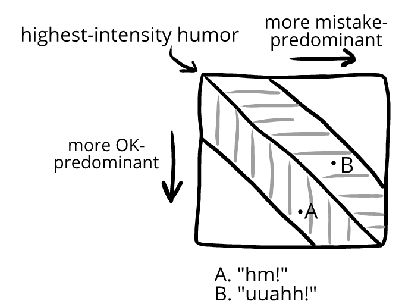

Humor tells are expressed in mayn different ways
Each humor tell has an endless variation in how it can be expressed—like with laughter.
Some of this diversity and nuance to laughter is captured in our existing words or transcriptions. We have:
loud laughs
pff-laughs
scoff-laughs
tsk-laughs
explosive laughs
nose-laughs
hahs
hm!s
hehs
huhs
hurhs
cackles
chortles
chuckles
titters
snickers
giggles
guffaws
snorts
(and so on)
In this book, we’ll referring to all of these exhales and inhales as laughter or *laughs*.
People often *laugh* in our examples, but this doesn't usually mean they had high-intensity laughter. (“Hahahahahahah!”) Instead, it usually refers to a laugh that’s less intense. (“pff!” “ah!” “heh!”, and so on.) We can see this in some examples:
Trevor: *playing StormConQuest* (frustrated) “I can’t beat the Ogre Time Magistrate. I’ve been trying for hours. It’s just not possible.”
Yasmin: “Did you buy armor potions?”
Trevor: *pause* (confused) “Do his magic arrows do physical damage?”
Yasmin: *smiles* “Half physical, half magical.”
Trevor: *laughs* (<- laugh-like exhale like uuahh! or aahh!) “Fuuuck me.”
Owen: *telling joke* “… and that’s why they always called him… Moo-shroom!”
Emma: *laughs* (<- laugh-like exhale like pfff or pssh)
Jessica: *reading trivia on her bottle of sweet tea* “Emma! Did you know sharks can lose 100 teeth a day!” *laughs* (<- laugh-like exhale like hm! Or Hhuh)
Emma: *not really listening* “Really?”
Zoe is browsing the bookstore when she picks up a book on meditation. She reads the book title: “Wherever You Go, There You Are.” She thinks about that for a second, puzzled. Then she laughs. (<- laugh-like exhale out the nose)
Owen is watching Fired Fireman. After Chief fails to stop the Master Arsonist, he becomes depressed and no one knows where he is. Finally, Victoria discovers he’s been living in a garbage bin the past month.
Victoria: (Happy) (Concerned) “Chief! We’ve been so worried about you. We know you did everything you could. You don’t need to hide from us.
Chief: “Um. I prefer the term ‘tactical self-ostracization.”
Owen: *laughs* (<- laugh-like exhale like tss! or ah! or a snort)
In our day-to-day conversations, we don’t always have an overall word for sounds like “hm!” or “huh!” or “fff!!” But in this book, we’ll just call them laughter.
In the same way a half-smile and a full smile are different intensities of the same thing (smile), hm! and hahahahah! are different intensities of the same thing (laughter).
> Consider:
We’ll mostly use *laughs* throughout this book to keep our examples easy to read—even though this does cut out information about the humor's duration, intensity, and so on.
Mixed emotions. Like any humor tell, how we laugh conveys a lot of nuance about the intensity and duration of our humor. But it also conveys where we fall on our graph of our three emotional zones.
If we're right in the middle, we may laugh in a way that just shows humor. But our laugh may also show we're leaning toward the OK-predominant zone (Jessica's "hm!"), or that we're leaning toward the mistake-predominant zone (Trevor's "uuahh!"):

Their humor was on different sides of the watershed line of highest-intensity humor—something that was conveyed through how they laughed.
This is the same for all humor tells, which each can be tinged with mistake-predominance or OK-predominance. For instance, a grimace sometimes refers to a smile expressing both humor and mistake-predominant emotions—and a dreamy look often refers to a smile expressing both humor and OK-predominant emotions.